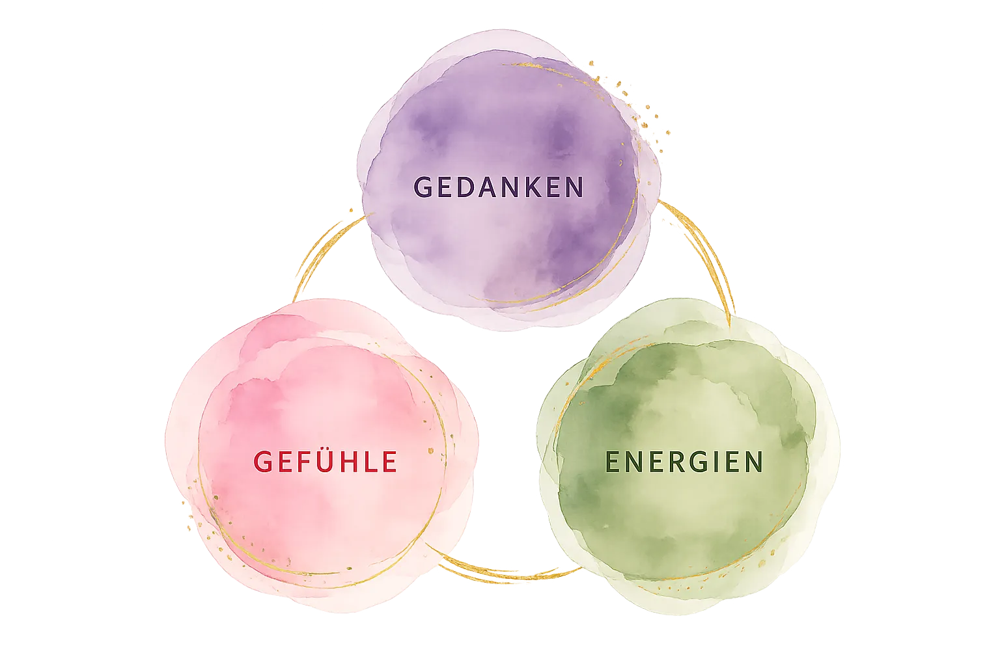

Dieser Blog-Artikel ist eine schriftliche Zusammenfassung meiner Livesendung vom 4. Oktober 2026. Jeden Mittwoch und jeden Sonntag um 10 Uhr gibt es auf meinem Webradio Sinnfunk Livesendungen, und jedes Monat steht unter einem eigenen Thema. Im Oktober lautet es „Die Grenzen des Denkens“.
Mir geht es in diesem Monat um eine kritische Auseinandersetzung mit der Idee, man könne sein Leben verändern, indem man sein Denken verändert – nach dem Motto: Du denkst es, und es wird wahr. In dieser Aussage steckt eine Grausamkeit, die man nicht auf den ersten Blick erkennt. Darauf werde ich in den kommenden Sendungen genauer eingehen. In dieser ersten Sendung wollte ich zunächst eine Grundlage schaffen und der Frage nachgehen: Was genau sind Gedanken aus esoterischer Sicht?
Livesendung vom Sonntag, 4. Oktober 2026, 10 Uhr
Aus dieser Sendung ist der Artikel entstanden.
Gedanken entstehen nicht in deinem Kopf
Gedanken entstehen nicht in deinem Kopf. Sie sind Gedankenformen – Energieformen auf der Mentalebene, die du über deinen Mentalkörper wahrnehmen kannst.
Die Mentalebene ist eine feinstoffliche Daseinsebene. Du kannst sie mit deinen fünf Sinnen nicht wahrnehmen, und trotzdem beeinflusst sie dich. Am ehesten kannst du sie dir wie Luft vorstellen: Luft kannst du nicht sehen, nicht schmecken und meist auch nicht hören. Du bemerkst sie erst, wenn Wind aufkommt oder wenn sie dir fehlt. Und doch umgibt sie uns ständig und wirkt auf uns. Natürlich hinkt der Vergleich ein wenig, denn Luft ist stofflich und messbar. Aber er zeigt, worum es geht: Etwas kann uns ständig umgeben und prägen, ohne dass wir es bewusst wahrnehmen.
Über deinen Mentalkörper bist du mit dieser Ebene verbunden, und in dieser mentalen Luft gibt es Gedanken. Manche nimmst du sehr deutlich wahr; andere sind so alt und so fern, dass du sie nur in tiefen meditativen Zuständen erreichst.
Daraus ergeben sich zwei wichtige Folgerungen. Die erste: Die allermeisten Gedanken, die du denkst, existieren bereits. Nur wenige werden neu geformt. Wir übernehmen die Gedanken unserer Familie, unserer Kultur, unserer Religion, unserer Nation – um nur einige der Gruppen zu nennen, von denen wir Gedanken erhalten. Die zweite: Wir übernehmen diese Gedanken nicht nur über Sprache, also über Gespräche, Bücher oder die Bilder einer Werbung; wir übernehmen sie auch, weil wir als Mitglieder der Gruppe auf der Mentalebene Zugriff auf die Gedanken haben, die die Gruppe festhält, nährt und formt.
Hier liegt der eigentliche Unterschied zur gewöhnlichen Sichtweise. Auch dort geht man davon aus, dass wir Gedanken von Familie, Religion und Kultur übernehmen, über Gespräche, Bücher und Bilder. Doch die Gedanken existieren dann nur in dir. Du übernimmst sie vielleicht von außen, aber sie leben in dir, getrennt von anderen Menschen. In der Esoterik gehen wir dagegen davon aus, dass du und deine Familienmitglieder, deine Religionsgemeinschaft, deine politische Gruppierung oder deine spirituelle Gemeinschaft ein und dieselben Gedanken wahrnehmt. Ihr blickt auf der Mentalebene in die gleiche Richtung, ihr seht dasselbe – wie Menschen, die an unterschiedlichen Orten denselben Mond am Nachthimmel betrachten.
Das ist auch der Grund, weshalb Menschen in unterschiedlichen Regionen der Welt oft zur gleichen Zeit zu denselben Erkenntnissen gelangen, in Wissenschaft, Kunst, Kultur und spiritueller Entwicklung. Newton und Leibniz entwickelten die Infinitesimalrechnung unabhängig voneinander, Darwin und Wallace die Idee der natürlichen Auslese. Hier wird nicht gestohlen. Hier wird am selben Projekt gearbeitet, auch wenn man einander nie begegnet ist.
Sind deine Gedanken deine Gedanken?
Aus dieser Sichtweise ergeben sich zwei Fragen:
- Sind deine Gedanken deine Gedanken, oder hast du sie einfach nur von einem anderen übernommen?
- Wie entstehen neue Gedanken – unabhängig von dem, was du bereits denkst und was deine dir bekannten Gruppen bereits denken?
Beginnen wir mit der ersten Frage. Als ich zum ersten Mal mit der Idee konfrontiert wurde, dass meine Gedanken nicht meine Gedanken sind, war ich so überrascht, dass ich ganz von selbst die Rolle des neutralen Beobachters einnahm – ohne meditatives Training und ohne Anstrengung. Es war reines Erstaunen darüber, dass das, was in meinem Kopf existiert und mir seit Jahren die Welt erklärt, gar nicht aus meinem Ich kommt. Dass ich es übernommen habe und – noch wichtiger – dass es nicht unbedingt wahr und richtig sein muss, nur weil ich es denke.
Eine zweite Beobachtung: Ich habe eigentlich fast immer die gleichen und gelegentlich sogar dieselben Gedanken gedacht – und es war kaum möglich, diese Gedanken wirklich zu verändern. Das führt zur zweiten Frage: Wenn die meisten Gedanken schon da sind und wir sie ohnehin ständig wiederholen, wie entstehen dann überhaupt neue?
Wie neue Gedanken entstehen
Das Wort „neu“ hat hier zwei Bedeutungen. Neu kann heißen, dass es den Gedanken bereits gibt, du ihn aber noch nicht kanntest, weil er in deinem Umfeld nicht vorkam. Neu kann aber auch wirklich neu bedeuten, also: noch nie zuvor gedacht. Das erste Neu ist einfacher und weitaus häufiger. Das zweite Neu ist selten, und es entsteht fast nie im Alleingang. Warum das so ist, zeigt sich am vierten der folgenden Wege.
Es gibt vier Wege, die dich zu neuen Gedanken führen können – ganz gleich, ob es sie bereits gibt und sie dir nur noch nicht zugänglich waren oder ob sie vollständig neu sind:
- Für dich ungewohnte Gefühle oder Begierden ziehen neue Gedanken an.
- Du reist bewusst in andere Daseinsebenen – durch Trance, schamanische Reisen oder tiefe Meditation –, um dort aktiv nach neuen Sichtweisen auf dich und die Welt Ausschau zu halten.
- Eine schwierige, für dich völlig neue Lebenslage reißt dich aus deinen gewohnten Bahnen, und deine bisherigen Gedanken können sie nicht erklären.
- Du bist Teil einer Gruppe, die vor einer Hürde steht, die sich mit den gegenwärtigen Mitteln nicht überwinden lässt.
Der erste Weg führt über das Fühlen und/oder das Begehren. Ein Gefühl steigt in dir auf oder ein Verlangen, das du so nicht kennst, und du kannst nicht sagen, woher es kommt. Also suchst du nach Worten, um es zu beschreiben und zu verstehen. Du hältst inne, beobachtest es, und diese Stille aktiviert deinen Mentalkörper. Daraus können Gedanken entstehen, die du vorher nicht kanntest. Manchmal sind es Gedanken, die irgendwo in der Welt bereits existieren und zu denen du nun Zugang findest. Manchmal sind es wirklich neue Gedanken.
Der zweite Weg führt über veränderte Bewusstseinszustände, in denen du andere Ebenen bereisen kannst. Bei schamanischen Reisen kann das die obere, mittlere oder untere Welt sein, in der Meditation sind es oft höhere Ebenen. Wenn ich selbst auf die Seelenebene reise – jene Ebene, auf der die Seele als unser überpersönlicher Wesenskern zu Hause ist –, gerate ich immer wieder in Wahrnehmungszustände, die ich weder erklären noch beschreiben kann. Sie hinterlassen Verwirrung und vor allem eine große innere Leere. Doch gerade aus dieser Leere, aus dem Noch-nicht-Wissen, können neue Gedanken entstehen. Auch in diesem Fall kann es sich um bereits vorhandene Gedanken handeln oder um vollständig neue.
Der dritte Weg ist weniger freiwillig. Solange du in den gewohnten Bahnen deines Lebens bleibst, bleiben mit hoher Wahrscheinlichkeit auch deine Gedanken gleich. Erst wenn du diese Bahnen verlässt, aus eigener Entscheidung oder weil die Umstände dich hinauswerfen, öffnet sich Raum für Neues.
Stell dir vor, du hast 38 Jahre lang für dieselbe Firma gearbeitet. Du warst ehrlich, immer pünktlich und kaum krank. Kurz vor der Pension wirst du entlassen und verlierst durch einen Trick der Firma auch noch deine Abfertigung. Seit deiner Kindheit hat man dir gesagt: Wenn du A, B und C tust, wirst du D, E und F erleben. Wenn du hart und ehrlich arbeitest, wirst du eine sichere Pension, genug Geld für das Alter und endlich Zeit für all die Reisen und Träume haben, die du dir während der Arbeitsjahre versagt hast. Nun stehst du da und verstehst die Welt nicht mehr. Deine gewohnten Gedanken können dir nicht erklären, was gerade geschehen ist. Zurück bleibt Leere, und gerade in dieser Leere können neue Gedanken kommen.
Wenn Gruppen gemeinsam denken
Der vierte Weg ist der bei Weitem häufigste, um wirklich neue Gedanken zu formen – also die zweite Art von Neu.
Die wenigsten von uns leben allein in einer Hütte im Wald. Wir leben in Gruppen, und diese Gruppen begegnen einander. Sie haben unterschiedliche Interessen und verfolgen unterschiedliche Ziele, die sich nicht alle gleichzeitig erreichen lassen.
Früher oder später stößt deshalb jede Gruppe auf eine Hürde: weil andere Menschen andere Ziele verfolgen oder weil sich die Umstände so verändern, dass die alten Lösungen nicht mehr greifen. Nun muss sich die Gruppe fragen: Wollen wir die Hürde überwinden? Passen wir uns an? Weichen wir zurück? Definieren wir unser Ziel neu? Um diese Fragen zu beantworten, blickt die Gruppe gemeinsam auf die Mentalebene. Das geschieht in aller Regel unbewusst, nur manche spirituelle Gruppen tun es absichtlich. Für die meisten Gruppen gilt: Jedes Mitglied denkt für sich allein nach. Was ihnen nicht bewusst ist: Sie alle blicken auf der Mentalebene in dieselbe Richtung.
Nach außen wirkt es also, als würde jeder für sich selbst nachdenken. Doch auf der Mentalebene gelten die Grenzen der physischen Welt nicht, weder die räumlichen noch die zeitlichen. Wenn du und ich zur selben Gruppe gehören, kann ich am Montag über ein Problem nachdenken und du am Mittwoch, und wir arbeiten trotzdem am selben Fragezeichen.
Und jetzt wird es spannend: Wer am Freitag dazukommt, begegnet nicht mehr dem Fragezeichen vom Montag, sondern einem, in das bereits zwei, zehn oder zehntausend Menschen ihre Energie gesteckt haben. Aus dieser gemeinsamen Anstrengung entstehen neue Gedanken, Ideen und Konstrukte – und in diesem Fall tatsächlich vollständig neue Ideen über die Welt.
Das klingt abstrakt, deshalb ein Beispiel. Zurzeit gibt es in der westlichen Welt viele politische Konflikte. Alle Menschen, die sich für Politik interessieren, bilden eine große Gruppe, und sie alle blicken auf dasselbe Fragezeichen: Was ist passiert? Warum sind wir hier angelangt? Lässt sich etwas ändern, und wenn ja, wie?
Innerhalb dieser großen Gruppe gibt es selbstverständlich viele Untergruppen: das linke und das rechte politische Spektrum etwa, oder Wissenschaftler, die keinem Lager angehören und einfach forschen. Ich selbst blicke als Esoterikerin auf dieses Fragezeichen, mich interessiert Politik aus esoterisch-energetischer Sicht.
Wichtig ist dabei: Dass eine große Gruppe auf denselben Punkt blickt, bedeutet nicht, dass alle zu denselben neuen Gedanken kommen. Es bedeutet nur, dass sehr viel Energie in diese Frage fließt und dadurch Neues entstehen kann. Und sehr viel Energie kann bedeuten, dass Ideen entstehen, die vorher noch nie jemand gedacht hat. Diese Ideen ziehen weitere Gedanken an, sie ziehen Gefühle an, sie ziehen Menschen an – und sie können die Welt verändern.
Ein Beispiel aus der Geschichte ist der Kommunismus. Heute verbindet man ihn vor allem mit Karl Marx und Friedrich Engels. Doch schon vor ihnen dachten Menschen wie Robert Owen, Charles Fourier oder Henri de Saint-Simon darüber nach, wie man das Los der Arbeiter verbessern könnte. Und aus derselben Frage gingen neben dem Kommunismus auch Genossenschaften, Gewerkschaften und die Sozialdemokratie hervor. Aus esoterischer Sicht haben im 19. Jahrhundert Tausende Menschen gleichzeitig in dieselbe Richtung geblickt, und der Kommunismus war nur eine der Ideen, die aus diesem Kraftakt entstanden sind.
Wussten die Menschen damals, was sie gestalteten? Nicht wirklich. Sie wussten vor allem, was sie nicht wollten: keine Ausbeutung der Arbeiter, um nur einen Punkt zu nennen. Sie wollten etwas Besseres, aber einen klaren Fahrplan gab es nicht. Genau das bedeutet es, etwas Neues zu erschaffen:
Man weiß, was man nicht will. Aber man kann noch nicht in Worte fassen, was die Alternative ist.
An diesem Punkt stehen heute viele politisch Interessierte. Das Neue entsteht nicht, weil die Gruppe Klarheit hat, sondern gerade weil viele unterschiedliche Menschen mit unterschiedlichen Befindlichkeiten Energie in dieselbe Frage stecken. Welche Ideen sich am Ende durchsetzen, darauf hat die moderne Esoterik eine klare Antwort. Ich sehe es allerdings anders.
Licht und Schatten
In weiten Teilen der modernen Esoterik geht man davon aus, dass die Menschheit lichtvoller, spiritueller und energetisch begabter wird und sich deshalb auf lange Sicht die lichtvollen Ideen durchsetzen werden. Doch die moderne Esoterik ist sehr geschickt darin, dem Schatten auszuweichen, dem eigenen wie dem kollektiven.
Gier, Neid und Missgunst sind in meiner Beobachtung noch genauso aktive Kräfte in der menschlichen Entwicklung wie Mitgefühl, Nächstenliebe und Verantwortung für Mensch und Natur. Jeder Mensch, der ehrlich mit sich selbst ist, hat schon einmal zugeben müssen, dass irgendwo einmal der Neid seine hässliche Fratze im eigenen Handeln gezeigt hat.
Hinzu kommt: Selbst eine gute Idee findet nicht immer ein gutes Ende. Auch dafür ist der Kommunismus ein Beispiel.
Das Leben ist keine mathematische Gleichung. Was wir auf der einen Seite hineingeben, kommt nicht unverändert auf der anderen Seite heraus. Der Zufall wirkt mit, das Karma und – in spirituellen Kreisen vergessen wir das gerne – auch die Natur. Und keine Idee überlebt in der Welt ohne Gefühle und Begierden. Gefühle aber verändern Ideen und Gedanken. Ich kann den Gedanken „Ich bin ein guter Mensch“ denken und dabei Wohlwollen oder Ablehnung empfinden. Abhängig vom Gefühl verändern sich der Gedanke und seine Auswirkung grundlegend. Auf diesen Punkt werde ich in einer anderen Livesendung noch eingehen.

- Gedanken entstehen nicht in deinem Kopf. Sie existieren als Gedankenformen auf der Mentalebene, und du nimmst sie über deinen Mentalkörper wahr.
- Die meisten deiner Gedanken teilst du mit Gruppen, die dir wichtig sind: Familie, Religion, spirituelle Gemeinschaft, Arbeit, Freundeskreis, Medien …
- Du denkst meist dieselben Gedanken, immer wieder.
- Neue Gedanken zu formen, braucht Zeit, Kraft und vor allem die Fähigkeit, mit dem Zustand des Nichtwissens zurechtzukommen.
- Eine gute Idee garantiert kein gutes Ergebnis. Was sich manifestiert, hängt von weit mehr ab als von unseren Gedanken.